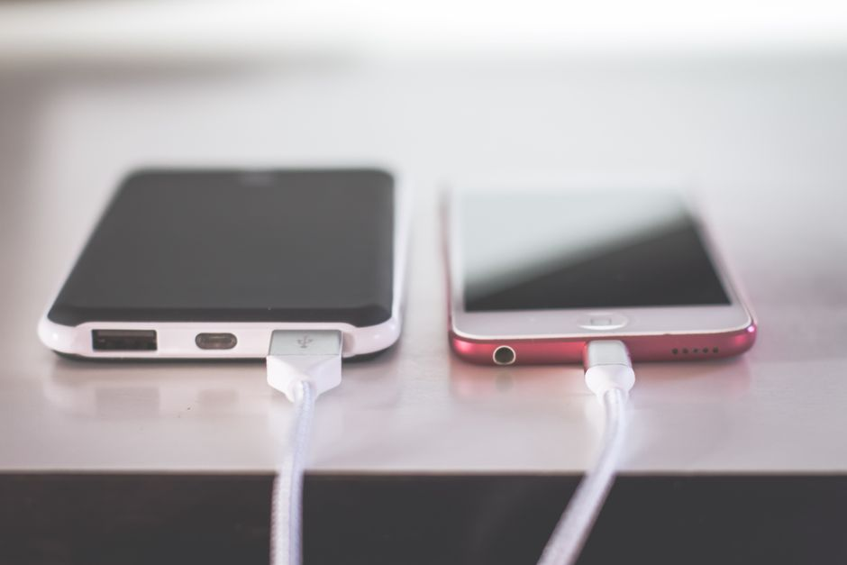

Huawei・中華ガジェット
海外製充電器のPSEマークの見方と確認ポイント
2026-11-26

スマートフォンやガジェットの充電器を海外から購入する機会が増えていますが、日本国内で使う場合はPSEマークの有無が安全性を見極める一つの手がかりになります。マークの意味と見方を整理します。
PSEマークとは何を示すものか
PSEマークは、電気用品が「電気用品安全法」で定められた安全基準を満たしていることを示すマークです。感電や発火などの事故を防ぐ目的で設けられており、対象となる電気用品は日本国内で販売する際にこのマークの表示が求められます。マークには菱形(◇)と丸形(○)の2種類があり、どちらが表示されるかは製品の種類によって決まっています。充電器やACアダプターのように直接コンセントに差し込んで使う製品は、危険度が比較的高いとされる「特定電気用品」というグループに分類されることが多く、このグループに該当する製品には菱形のPSEマークが使われます。まずは自分が使っている充電器がどちらのマークの対象になるのかを知ることが、見方を理解する第一歩になります。
菱形と丸形、充電器はどちらのマークか
電気用品安全法の対象となる製品は、危険度の高い「特定電気用品」(116品目)と、それ以外の「特定電気用品以外の電気用品」(341品目)に分けられています。特定電気用品には菱形のPSEマークが表示され、登録検査機関による適合性検査を経て初めて表示できる仕組みになっています。一方、特定電気用品以外の製品には丸形のPSEマークが表示され、こちらは事業者による自主検査で足ります。スマートフォンなどの充電に使うACアダプター(直流電源装置)は特定電気用品に区分されるため、正しい製品であれば菱形のPSEマークが表示されます。もし充電器に丸形のPSEマークが付いていた場合は、本来表示されるべきマークと異なっている可能性があるため、注意して確認したほうがよいという情報もあります。
海外製・個人輸入の充電器で気をつけたい点
海外の通販サイトなどから消費者が直接購入する「個人輸入」の場合、日本の電気用品安全法の規制がそのまま及ぶわけではないため、PSEマークのない充電器を個人が購入して使うこと自体は禁止されていません。ただし、PSEマークがないということは、日本の基準に基づく安全性の確認が行われていない製品である可能性があるという点は理解しておく必要があります。海外製の充電器は電圧の仕様が日本の100Vに合っていない場合や、絶縁・ヒューズなどの安全対策が日本の基準と異なる場合があり、これが発火や感電などのトラブルにつながる可能性があるとされています。価格の安さだけで選ぶのではなく、どのような基準で作られた製品なのかを確認する視点を持つことが大切です。
表示を確認するときのポイント
充電器のPSEマークを確認する際は、まずマークの形(菱形か丸形か)と、その近くに記載されている製造事業者名や登録検査機関名などの表示をあわせて見ることが参考になります。特定電気用品に該当する菱形PSEマークの製品であれば、適合性検査を経て表示されているはずなので、マークの形が製品の種類に対して不自然でないかという視点も確認材料の一つになります。また、製品本体にPSEマークの表示がなく、パッケージや説明書にだけ記載があるような場合も、表示のルールに沿っているかどうか気になるところです。不明な点がある場合は、販売元の情報や公的な相談窓口(消費生活センターなど)に確認するという方法もあります。
充電器のPSEマークは、菱形か丸形かでその製品がどの区分に属するかを示す目安になります。海外製・個人輸入の製品を使う際は、マークの有無や表示内容を確認する習慣を持つと安心につながります。


読み込み中...